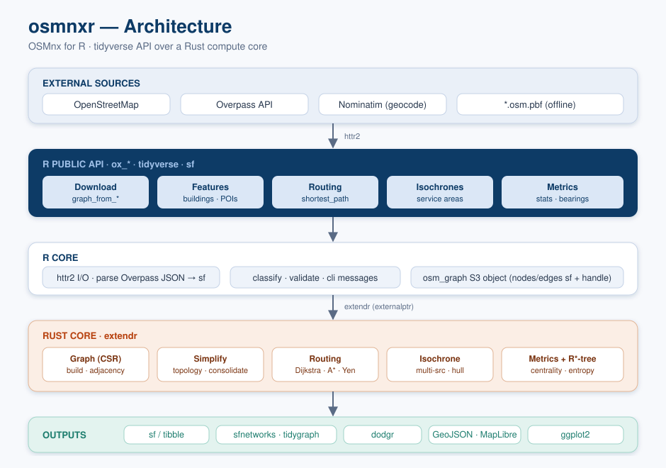
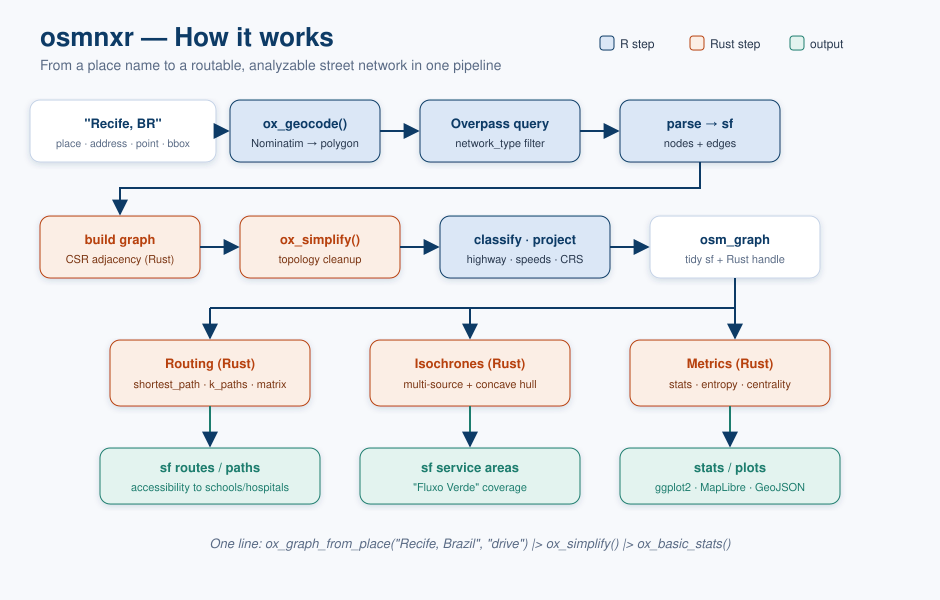

osmnxr is OSMnx for R: a tidyverse-friendly toolkit, inspired by the OSMnx Python library, to download, model, simplify, analyze and visualize street networks and other geospatial features from OpenStreetMap.
It is a reimplementation — not a Python wrapper. Heavy graph computation (routing, simplification, metrics) runs in a bundled Rust core via extendr, so there is no Python runtime to manage. Everything you get back is tidy sf.
Installation
osmnxr builds from source and needs the Rust toolchain (rustup) at install time.
# install.packages("remotes")
remotes::install_github("StrategicProjects/osmnxr")Quick start
library(osmnxr)
# Download a drivable street network for a place
g <- ox_graph_from_place("Olinda, Brazil", network_type = "drive")
g
plot(g)
# Route between two points (Rust Dijkstra)
from <- ox_nearest_nodes(g, x = -34.85, y = -8.01)
to <- ox_nearest_nodes(g, x = -34.84, y = -8.00)
ox_shortest_path(g, from, to)
# Urban metrics
ox_basic_stats(g)
ox_orientation_entropy(g) # street-grid order/disorderNo network access? Explore the whole API offline with a synthetic grid:
g <- example_osm_graph()
ox_basic_stats(g)
ox_shortest_path(g, ox_nearest_nodes(g, 0, 0), ox_nearest_nodes(g, 300, 300))How it works
osmnxr is split into a tidy R API over a Rust compute core:

The pipeline, from a place name to an analyzable network:

Related work
osmnxr complements the R geospatial stack — it can hand graphs to sfnetworks, tidygraph and dodgr, and downloads via the same Overpass API used by osmdata.